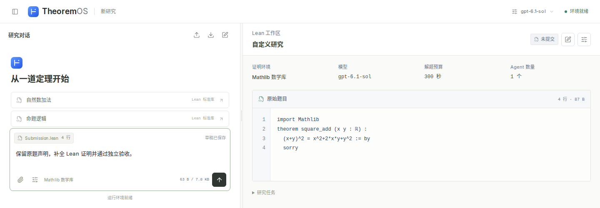
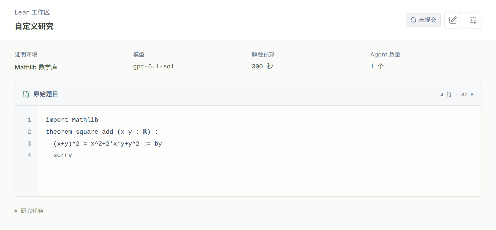
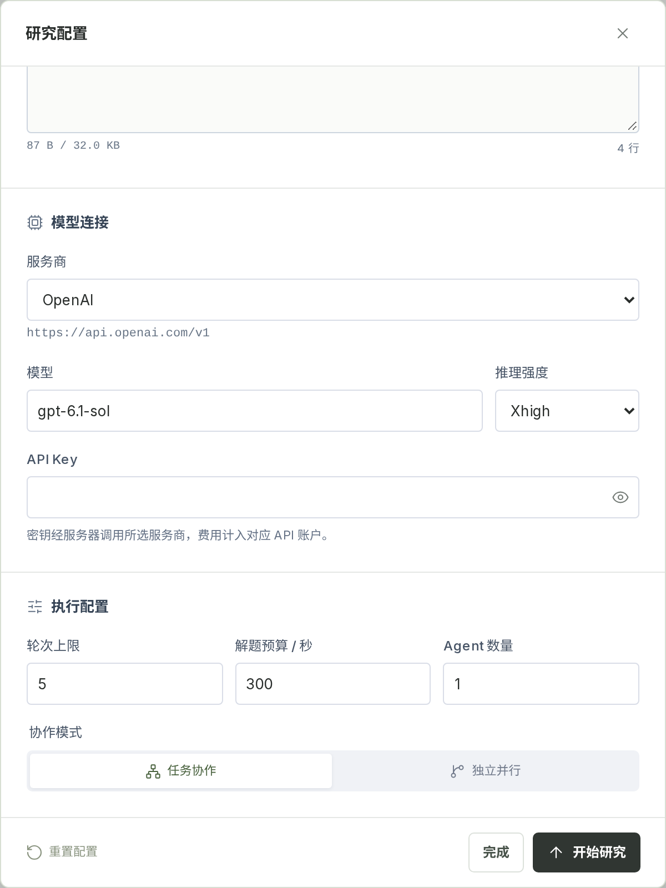
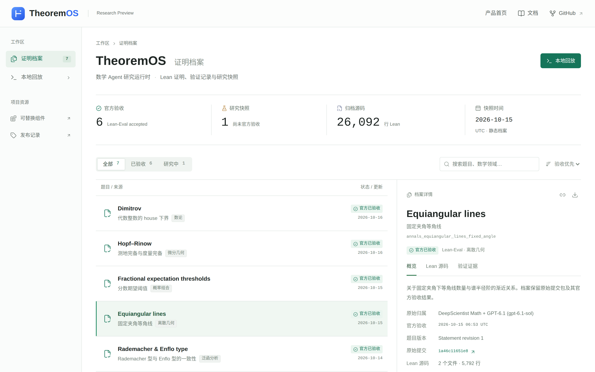

在对话中探索，
在工作区验证。
研究对话与 Lean 工作区同步展开。手机和平板可切换视图，查看原题、源码与检查状态。
从候选，
到独立验收。
一份预设证明的四步回放。源码、检查与修复，连同最终回执一起留存。
查看完整回放记录研究成果，
有据可查。
个具备 Lean-Eval
官方通过记录的证明包
| 题目与原始研究记录 | 研究领域 | 验收与证据 |
|---|
成果来自前身 DeepScientist / DeepScientist Math 及后续工作，包含继续运行与环境迁移。原始归属、官方结果与源码见各题档案。
五种决策，
组合研究。
固定题目、环境、模型与预算，替换一类研究决策。五个源码组件，支持单 Agent 与多 Agent 对照研究。
让下一步，有章可循。
选择就绪任务，决定继续、重试或停止。把任务排序与路线、预算约束放在一起研究。
- 输入
- 研究状态 · 候选操作 · 共享预算
- 输出
- 下一步操作 · 有序就绪任务
M3 · 搜索接口
通过带版本的 TypeScript 源码接口组合研究策略。
动手替换一个组件查看 M3 任务排序的源码示例runGoalsFirst.ts · TypeScript
const modules: SolverModules = {
...directSolverModules,
id: 'goals-first-example-v1',
M3: {
...directSolverModules.M3,
version: `${directSolverModules.M3.version}/example-goals-first-v1`,
ready: goalsFirstResearchTasks,
},
};让研究过程，
看得见。
从原题、模型配置到最终档案，每一处画面都来自实际运行的产品。
打开证明档案
原题与源码，同步查看。
选择 Lean 标准库或固定 Mathlib 环境，在右侧工作区检查候选与诊断。这张截图为未提交草稿。

你的模型，你的预算。
支持 OpenAI 及兼容 Responses API 的服务。API Key 不写入浏览器存储。

# 需要 Linux 与 Docker Engine / Compose
git clone https://github.com/LikC1606/theorem-os.git
cd theorem-os
docker compose -f apps/web/compose.yml build worker web
docker compose -f apps/web/compose.yml up -d web
docker compose -f apps/web/compose.yml ps启动后打开 http://127.0.0.1:8787
Mathlib 运行需 /dev/fuse 与用户命名空间；建议为每个并发任务预留 30 GiB 磁盘、8 GiB 内存。首次构建需下载依赖。
# 获取开源运行时
git clone https://github.com/LikC1606/theorem-os.git
cd theorem-os
bun install --frozen-lockfile# CLI 安装后，准备 Lean 并回放预设证明
elan toolchain install leanprover/lean4:v4.33.0
bun run math doctor --lean-only
export THEOREMOS_CASE="$PWD/../theorem-os-runs/first-replay"
bun run math example replay --dir "$THEOREMOS_CASE"
bun run math inspect --run "$THEOREMOS_CASE/result.json"evaluated_passed 为验收结论开始之前。
适合用来做什么？
面向数学 Agent 研究者和 Lean 开发者，用于构造证明、比较搜索与协作方法，以及复盘研究实验。当前为研究预览版本，支持通过 TypeScript 源码扩展组件。
可以直接在网页运行证明吗？
可以在部署后的网页工作台中提交 Lean 与 Mathlib 原题、输入自己的 API Key 并查看验收结果。当前 GitHub Pages 站点是静态官网，包含界面截图、预设回放和证明档案；运行工作台需要你自己的 Linux 本地环境或服务器，部署命令见上方。
支持哪类 API Key？
网页工作台支持 OpenAI 及兼容 Responses API 的服务，服务地址由部署者配置。模型研究会产生服务商对应的用量；本地预设回放不调用模型，也不需要 API Key。
网页工作台会保存研究记录吗？
运行记录临时保存在服务内存，可下载源码与报告；服务重启或会话到期后记录清空。网页草稿在当前标签页保存，API Key 不写入浏览器存储。CLI 支持独立的持久运行与恢复流程。